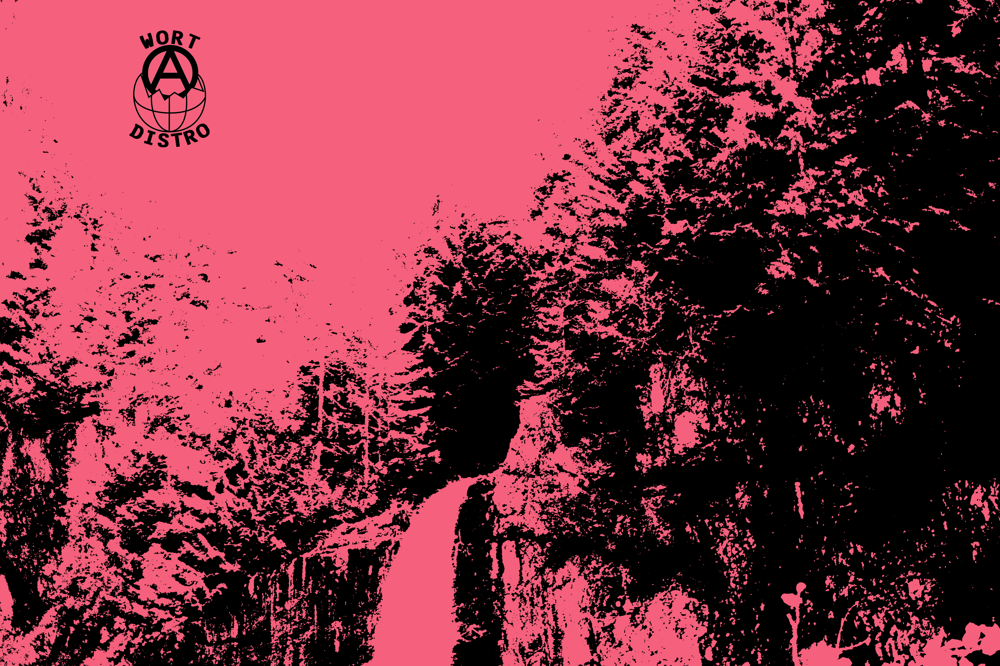

04/04/21
howdy! here we are. we are an anarchist collective dedicated to sharing the work of local artists and building autonomous mututal aid, based out of seattle.
stay tuned for updates of music releases thru our tape lable arm:
WORLD RECORDS, new prints, and mutual aid projects.
you can follow
GUERRILLA PARK-- a mutual aid distro we support-- on twitter.
